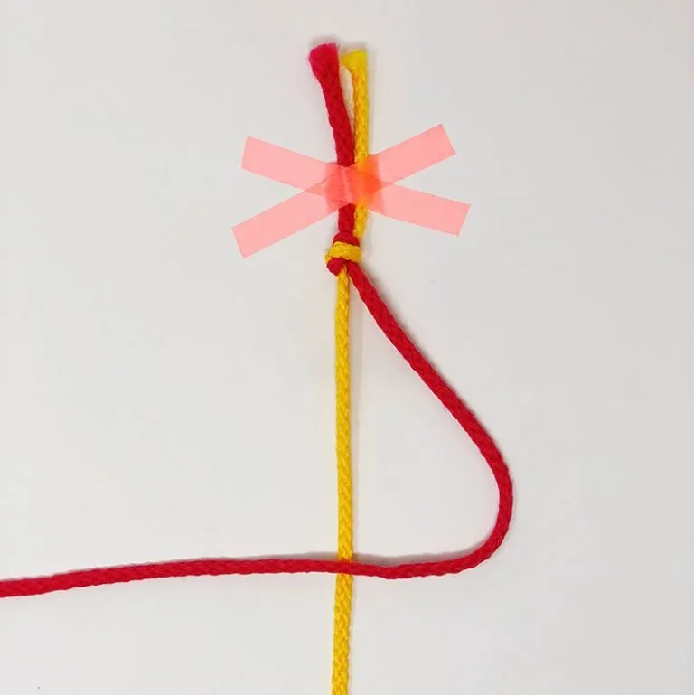
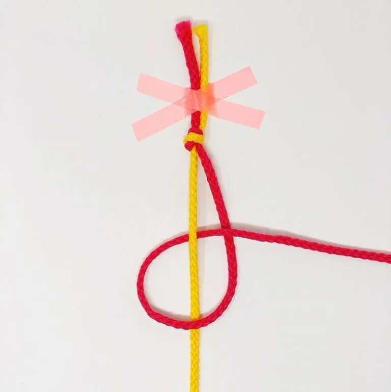
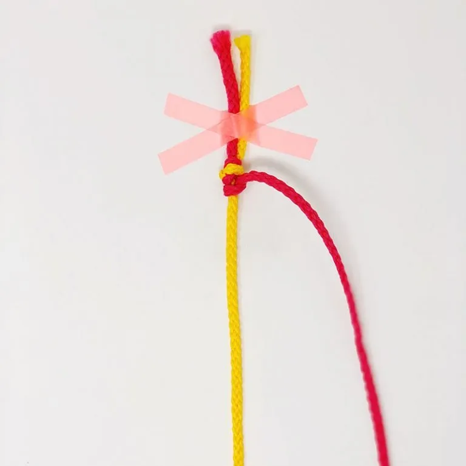
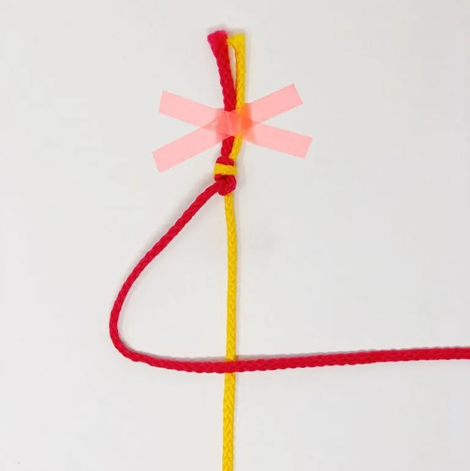
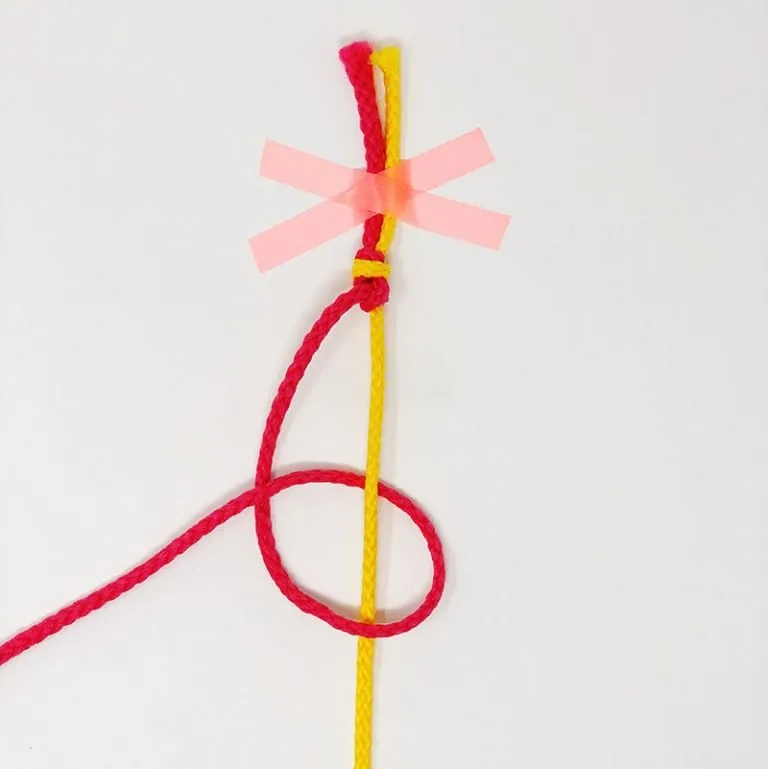
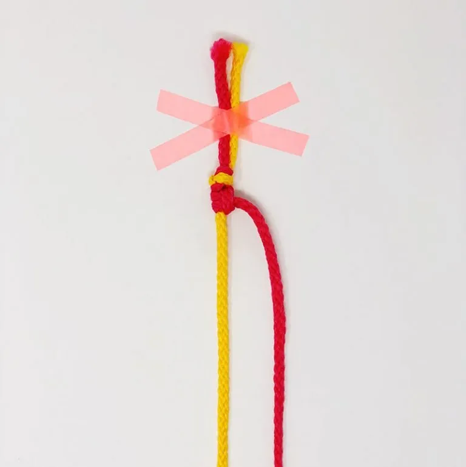

Поворотный узел: нить начинается справа, делает петельку влево и возвращается вправо.

Возьмите правую (рабочую) нить и наложите её поверх нити основы влево.

Сформируйте первый полуузел в форме буквы «P» слева от основы.

Проденьте рабочую нить под основу и затяните первый полуузел вверх.

Теперь перехватите ту же нить слева и наложите её поверх основы обратно вправо.

Сформируйте второй полуузел в форме цифры «4» справа от основы.

Затяните второй полуузел. Нить совершила разворот и вернулась на правую сторону!